CISP 400 Object-Oriented Programming
C++
Last Time
- The this Pointer and Constant Member Functions
- Static Members
- Operator Overloading
- Friends of Classes
Course Framing

Source Slide 2
Source Slide 3
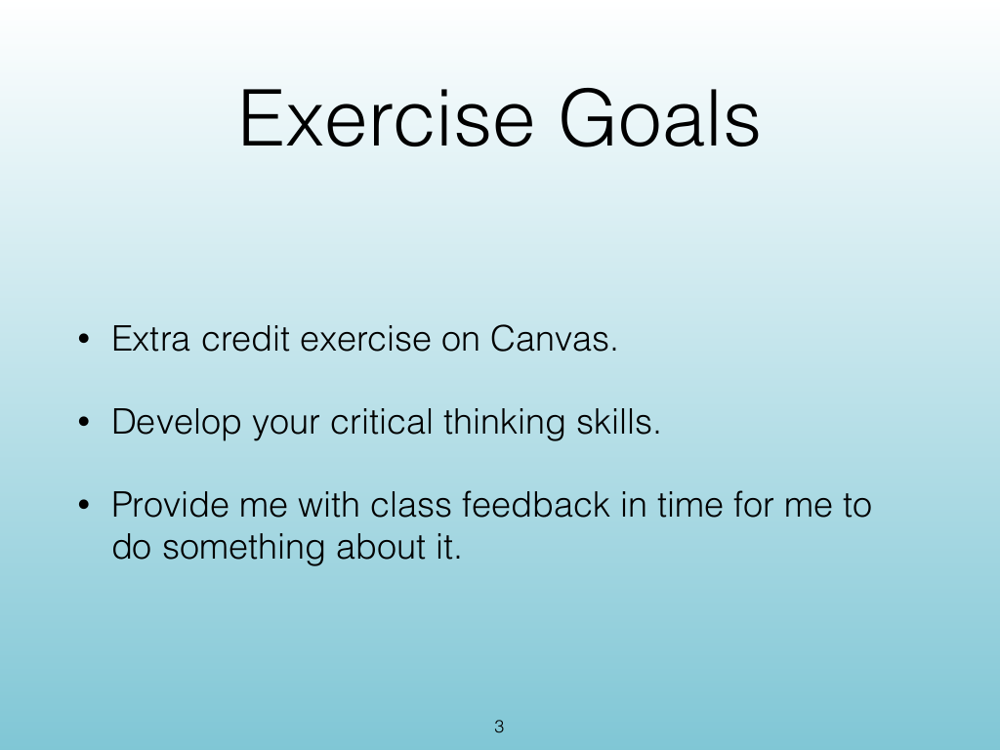
Source Slide 4
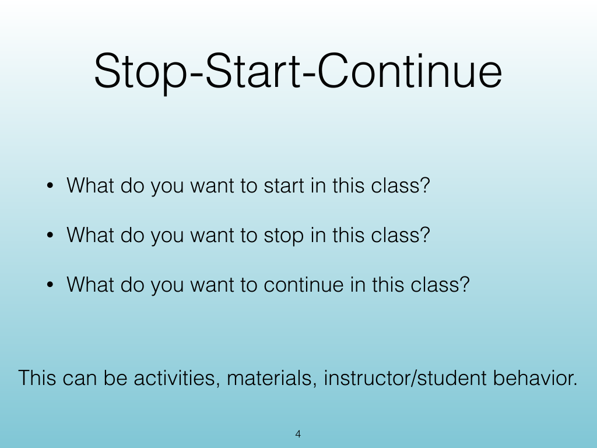
Source Slide 5
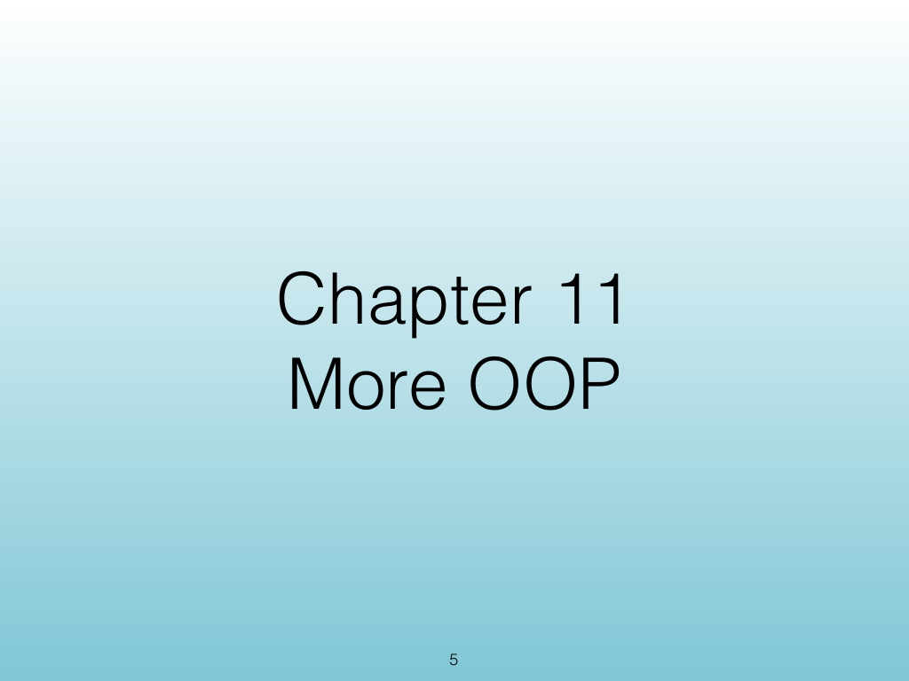
Source Slide 6
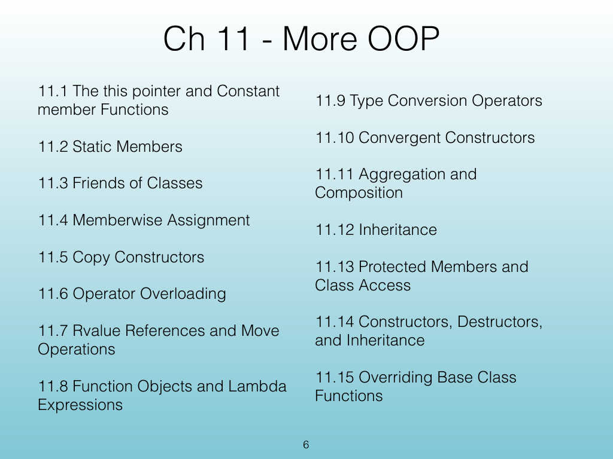
Source Slide 7
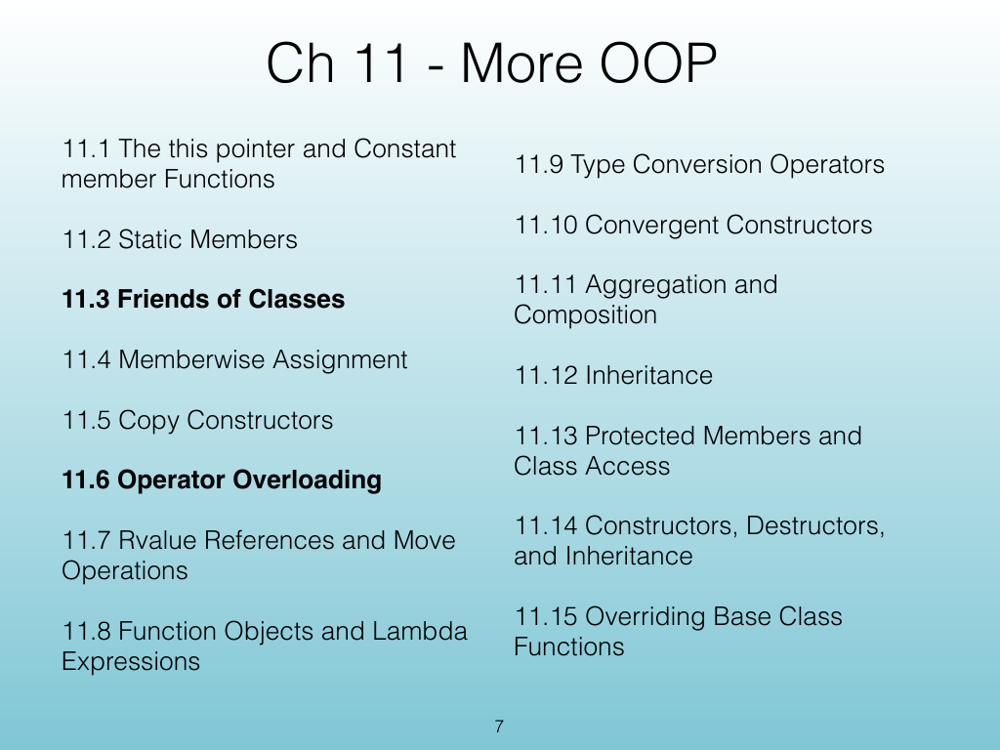
Source Slide 8
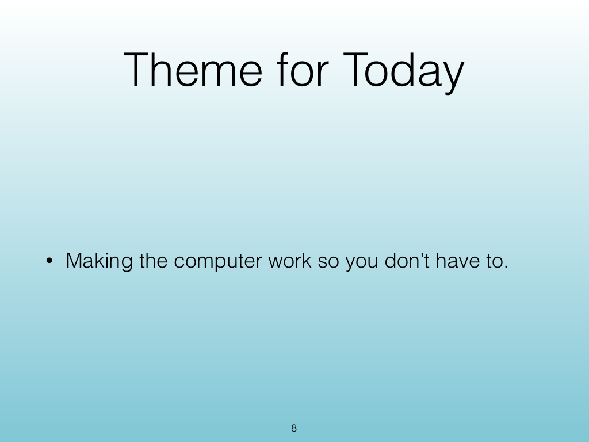
Operator Overloading
How Can a Class Define Its Own Arithmetic?
- C++ already gives arithmetic operators familiar meanings for built-in values.
- An operator method lets a class define what those symbols mean for its objects.
The operator+ Method
// overloadPlus.cpp
#include <iostream>
using namespace std;
class Point2D {
private:
int x;
int y;
public:
Point2D(int xValue = 0, int yValue = 0);
Point2D operator+(const Point2D& other) const;
void print() const;
};
Point2D::Point2D(int xValue, int yValue) {
x = xValue;
y = yValue;
}
Point2D Point2D::operator+(const Point2D& other) const {
return Point2D(x + other.x, y + other.y);
}
void Point2D::print() const {
cout << "(" << x << ", " << y << ")" << endl;
}
int main() {
Point2D first(2, 3);
Point2D second(4, 1);
Point2D total = first + second;
total.print();
return 0;
}The operator- Method
// overloadminus.cpp
#include <iostream>
using namespace std;
class Point2D {
private:
int x;
int y;
public:
Point2D(int xValue = 0, int yValue = 0);
Point2D operator-(const Point2D& other) const;
void print() const;
};
Point2D::Point2D(int xValue, int yValue) {
x = xValue;
y = yValue;
}
Point2D Point2D::operator-(const Point2D& other) const {
return Point2D(x - other.x, y - other.y);
}
void Point2D::print() const {
cout << "(" << x << ", " << y << ")" << endl;
}
int main() {
Point2D first(8, 5);
Point2D second(3, 7);
Point2D difference = first - second;
difference.print();
return 0;
}Prefix and Postfix operator++
// demoPrePost.cpp
#include <iostream>
using namespace std;
class Counter {
private:
int value;
public:
Counter(int start = 0);
Counter& operator++();
Counter operator++(int);
void print() const;
};
Counter::Counter(int start) {
value = start;
}
Counter& Counter::operator++() {
++value;
return *this;
}
Counter Counter::operator++(int) {
Counter original = *this;
++value;
return original;
}
void Counter::print() const {
cout << value << endl;
}
int main() {
Counter count(5);
Counter prefixResult = ++count;
prefixResult.print();
count.print();
Counter postfixResult = count++;
postfixResult.print();
count.print();
return 0;
}Operator Methods Combine Object State
operator+andoperator-return new objects built from two operands.- Prefix
operator++changes the object before returning it. Postfixoperator++returns the original value before changing the object.
Friend Functions
What Does friend Change?
- A friend function is not a member of the class, but the class grants it access to private data.
- The declaration inside the class controls which outside functions receive that access.
A Friend Function Demonstration
// demoFriend.cpp
#include <iostream>
using namespace std;
class Temperature; // forward declaration
void showTemperature(const Temperature& value);
class Temperature {
friend void showTemperature(const Temperature& value);
private:
double celsius;
public:
Temperature(double value = 0.0);
};
Temperature::Temperature(double value) {
celsius = value;
}
int main() {
Temperature reading(21.5);
showTemperature(reading);
return 0;
}
void showTemperature(const Temperature& value) {
cout << value.celsius << " degrees Celsius" << endl;
}A Friend Function Without a Forward Class Declaration
// demoFriend2.cpp
#include <iostream>
using namespace std;
class Temperature {
friend void showTemperature(const Temperature& value);
private:
double celsius;
public:
Temperature(double value = 0.0);
};
Temperature::Temperature(double value) {
celsius = value;
}
void showTemperature(const Temperature& value);
int main() {
Temperature reading(21.5);
showTemperature(reading);
return 0;
}
void showTemperature(const Temperature& value) {
cout << value.celsius << " degrees Celsius" << endl;
}The Class Controls Friendship
- Friendship is granted by the class that owns the private data.
- A friend function can read or change private members, but it does not become a member function.
Friendship Is Selective
The class names the specific function that receives access. This controlled access is useful when a non-member interface must work with private object state.
Stream Operators
How Can a Class Work with cout and cin?
Stream operators let a class define how its objects are inserted into output and extracted from input. The operator functions are free functions because the stream object appears on the left side of each expression.
operator<< Without a Friend
// demoStInsertNoFriend.cpp
#include <iostream>
using namespace std;
class Rectangle {
private:
int width;
public:
Rectangle(int widthValue = 0, int heightValue = 0);
int height;
};
ostream& operator<<(ostream& output, const Rectangle& rectangle);
Rectangle::Rectangle(int widthValue, int heightValue) {
width = widthValue;
height = heightValue;
}
int main() {
Rectangle room(8, 5);
cout << room << endl;
return 0;
}
ostream& operator<<(ostream& output, const Rectangle& rectangle) {
// output << rectangle.width << " x " << rectangle.height;
// The line above would fail because width is private.
output << "height = " << rectangle.height;
return output;
}operator>> for cin
// demoStExtract.cpp
#include <iostream>
using namespace std;
class Rectangle;
istream& operator>>(istream& input, Rectangle& rectangle);
class Rectangle {
friend istream& operator>>(istream& input,
Rectangle& rectangle);
private:
int width;
int height;
public:
void print() const;
};
void Rectangle::print() const {
cout << "Rectangle: " << width << " x " << height << endl;
}
int main() {
Rectangle room;
cout << "Enter width and height: ";
cin >> room;
room.print();
return 0;
}
istream& operator>>(istream& input, Rectangle& rectangle) {
input >> rectangle.width >> rectangle.height;
return input;
}Stream Operators Return the Stream
operator<<returns anostream&, andoperator>>returns anistream&.- Returning the stream preserves normal stream behavior and allows expressions to be chained.
Advanced Friendship Patterns
What Else Can Become a Friend?
Friendship can connect a class to another class or allow one function to work with private data from multiple classes. These patterns extend the selective access introduced in the previous topic.
A Friend Class Example
// demoFriendClass.cpp
#include <iostream>
using namespace std;
class Square;
class Rectangle {
private:
int width;
int height;
public:
Rectangle();
void convert(const Square& square);
int area() const;
};
class Square {
friend class Rectangle;
private:
int side;
public:
Square(int value = 0);
};
int main() {
Rectangle rectangle;
Square square(4);
rectangle.convert(square);
cout << rectangle.area() << endl;
return 0;
}
Rectangle::Rectangle() {
width = 0;
height = 0;
}
Square::Square(int value) {
side = value;
}
void Rectangle::convert(const Square& square) {
width = square.side;
height = square.side;
}
int Rectangle::area() const {
return width * height;
}One Friend Function Across Two Classes
// demoFriendTwoClasses.cpp
#include <iostream>
using namespace std;
class A;
class B;
int add(const A& left, const B& right);
class A {
friend int add(const A& left, const B& right);
private:
int value;
public:
A(int number = 0);
};
class B {
friend int add(const A& left, const B& right);
private:
int value;
public:
B(int number = 0);
};
int main() {
A first(12);
B second(1);
cout << add(first, second) << endl;
return 0;
}
A::A(int number) {
value = number;
}
B::B(int number) {
value = number;
}
int add(const A& left, const B& right) {
return left.value + right.value;
}Friendship as Part of the Public Interface
- Friendship is a deliberate part of class design.
- The class chooses which outside functions or classes receive access to private data.
Friendship Extends a Class Interface
Friend functions support non-member operations, friend classes support closely related classes, and both forms preserve selective access to private state.
Code Together
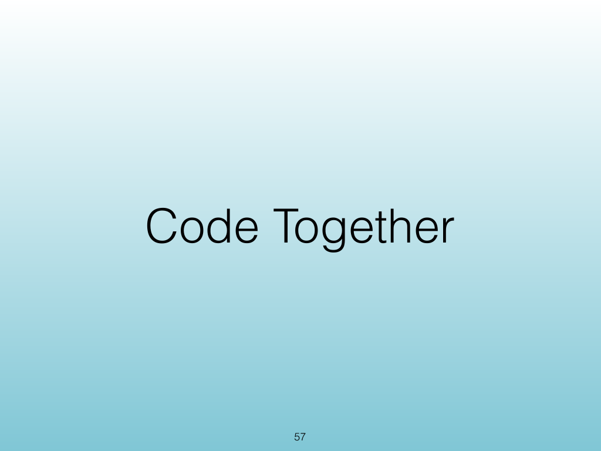
Source Slide 58
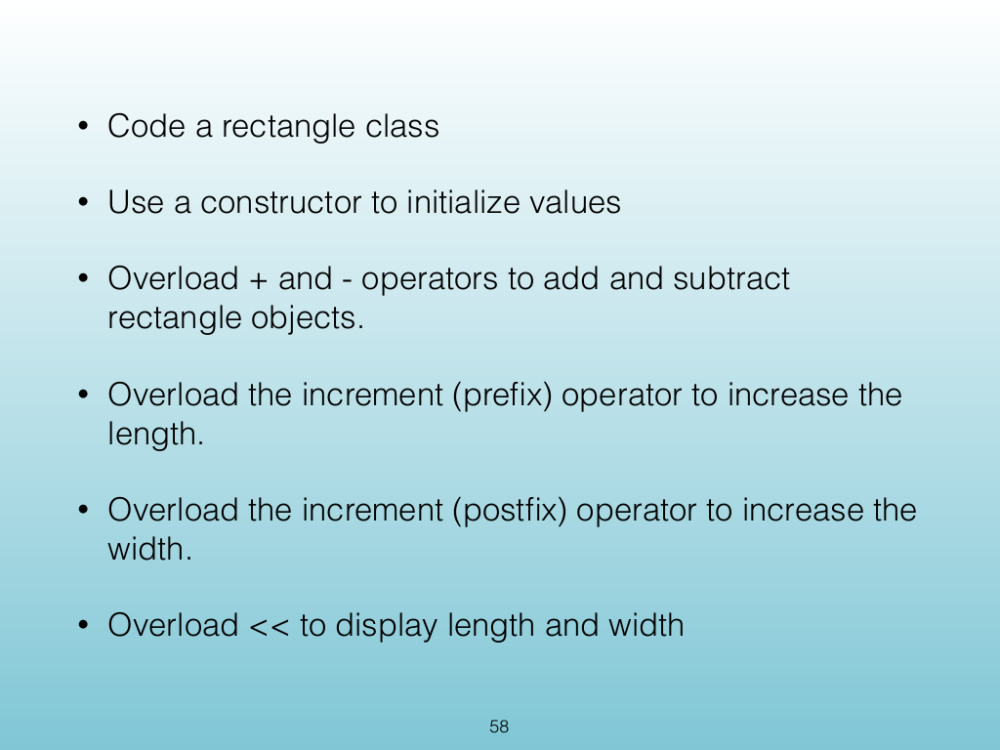
Source Slide 59
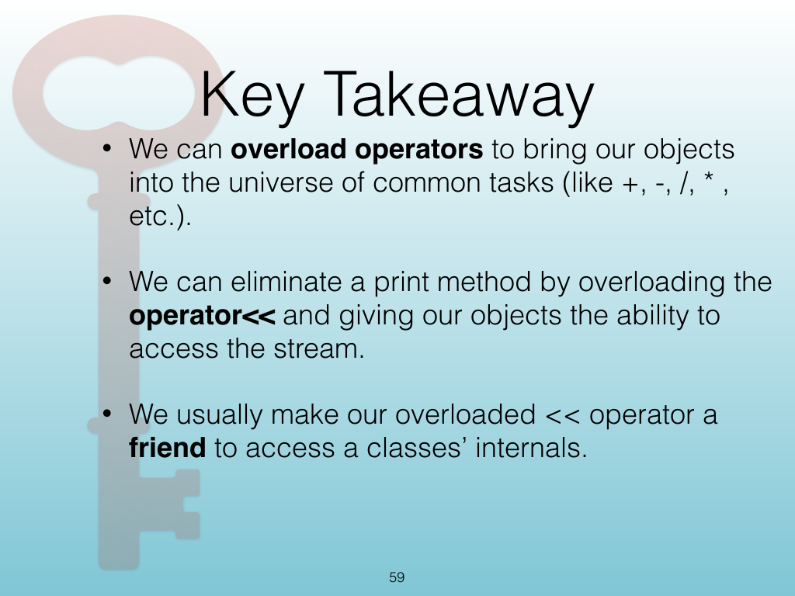
Lecture Wrap-Up
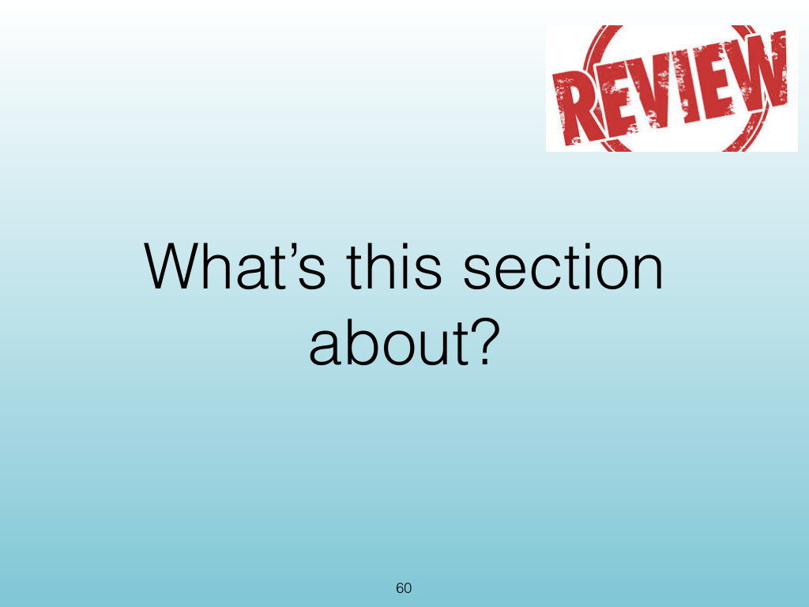
Source Slide 61
Source Slide 62
Source Slide 63
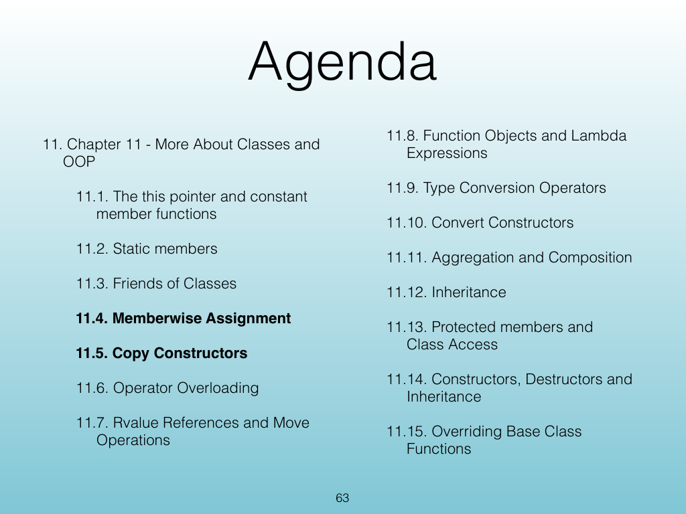
Source Slide 64
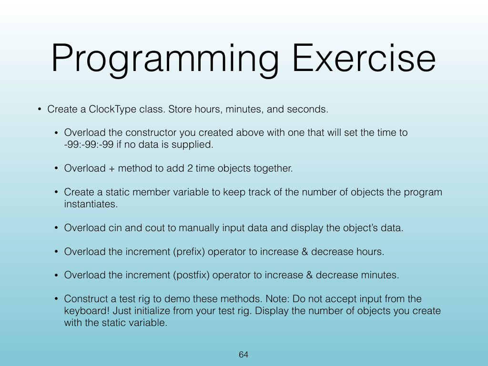
CISP 400 · Fowler